Parkeren in Nijmegen, met een aantal slimme tips
Een goede en goedkope parkeerplek vinden kan erg lastig zijn. Vaak moet je te veel betalen voor de plek of zijn alle plekken al bezet. Echter is parkeren…
Praktische informatie over wonen, werken, ondernemen en studeren in Nijmegen.
Een goede en goedkope parkeerplek vinden kan erg lastig zijn. Vaak moet je te veel betalen voor de plek of zijn alle plekken al bezet. Echter is parkeren…

Met ruim 177.000 inwoners telt de stad Nijmegen zo’n 25 apotheken. Of je nu inwoner bent, een student of een toerist, er zal zich altijd een moment…

Toe aan een verwenmoment voor je voeten, of heb je last van eelt, een likdoorn of een ingegroeide nagel? Een goede pedicure helpt in beide gevallen. In…

Bij een verbouwing denk je al snel aan de kamer die op de schop gaat. In een woning met weinig buitenruimte is de route naar buiten minstens zo…

Nijmegen digitaliseert in hoog tempo. Voor de gemeente is digitale technologie niet langer alleen een hulpmiddel, maar een belangrijke voorwaarde voor een…
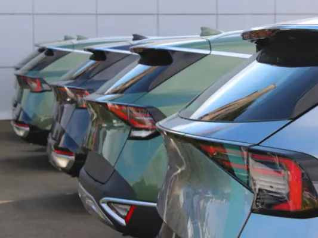
De mobiliteitsuitdagingen van een groeiende stad Nijmegen groeit gestaag. Nieuwe woningen, kantoren en onderwijsinstellingen trekken steeds meer mensen…
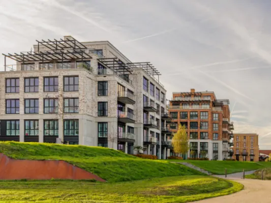
Er zijn steden waar je naartoe verhuist voor een baan, en er zijn steden waar je naartoe verhuist omdat je er niet meer weg wilt. Nijmegen valt…
E-mail is vrijwel altijd je eerste digitale contactpunt. Klanten stellen vragen, offertes worden gemaild, afspraken bevestigd en facturen verstuurd. En…
Nijmegen is een stad van water. Iedereen kent de Waal, maar er stroomt nog een andere rivier door de oudste stad van Nederland. Een rivier van drank, die…
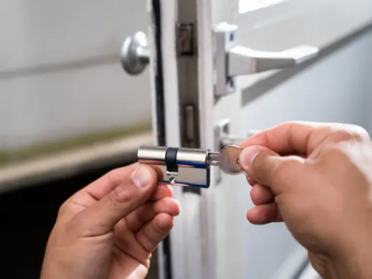
Nijmegen, een stad vol historie en charme, heeft net als elke andere stad zijn eigen uitdagingen op het gebied van veiligheid en woningbeveiliging. Of je…
Ga je binnenkort in Nijmegen wonen voor je studie of een nieuwe baan? Spannend! De oudste stad van Nederland heeft veel te bieden: sfeervolle straatjes…
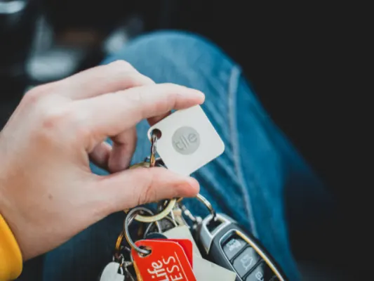
Je hoeft echt niet groot te denken om impact te maken. Een slimme manier om je merk of boodschap onder de aandacht te brengen, is via sleutelhangers…
Ga jij binnenkort in Nijmegen wonen of ben je er net komen wonen? Dan is het handig om een aantal apps op je smartphone te installeren. Op deze manier kun…
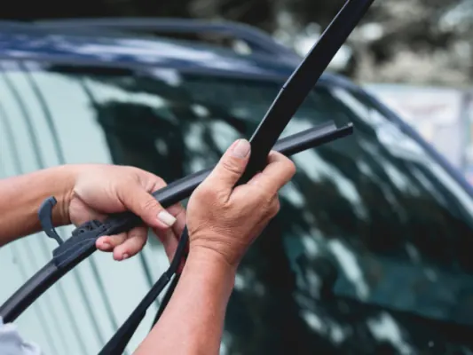
De beste ruitenwissers voor Nijmegen kiezen doe je door rekening te houden met het gematigde zeeklimaat met veel regen en wind. Flatblade of hybride…
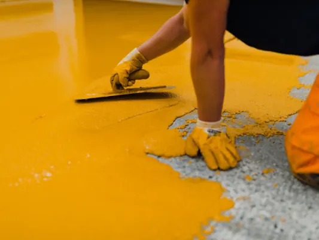
Ben je op zoek naar een manier om jouw woning in Nijmegen een unieke en stijlvolle uitstraling te geven? Dan is een lavasteen gietvloer een uitstekende…
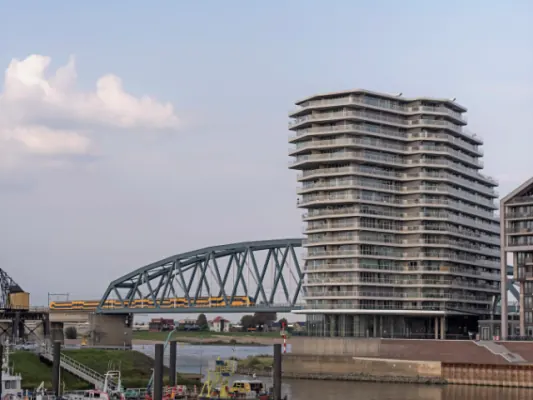
De magie (en stress) van een woning vinden in Nijmegen Woning zoeken in Nijmegen voelt tegenwoordig een beetje als daten in een drukke club: veel…
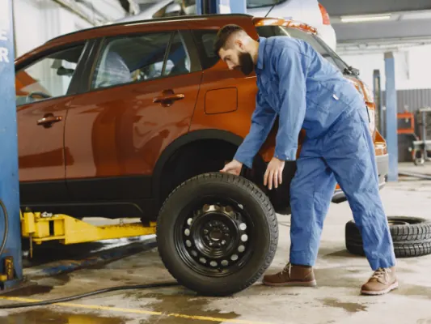
Wat voor een geluid maken je auto banden wanneer je door Nijmegen rijd? Nijmegen, een van de oudste en mooiste steden van Nederland, staat bekend om zijn…

Nijmegen is een stad vol historie, cultuur en verrassende plekjes. Ontdek je de stad per scooter? Je ervaart de unieke sfeer van de oudste stad van…

Het oprichten van een bv biedt veel voordelen. Steeds meer ondernemers in Nijmegen kiezen hiervoor om hun bedrijf op te starten. Een b.v. oprichten bij…
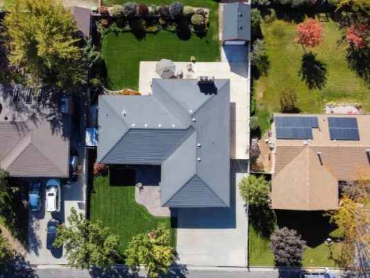
Nijmegen is een stad die leeft. Met haar historische charme en moderne ontwikkelingen heeft de stad iedereen iets te bieden. Nieuwbouwprojecten zorgen…
Je motor staat het veiligst wanneer hij overdekt en in een goed beveiligde opslagruimte is gestald. Dit beschermt niet alleen tegen regen en wind, maar…
Het einde van het jaar biedt ondernemers een unieke kans om strategische investeringen te doen, niet alleen voor de groei van hun bedrijf, maar ook voor…
Het regelmatig controleren en verversen van motorolie is een essentieel aspect van auto-onderhoud dat helaas door veel autobezitters wordt overgeslagen…
Ben je ondernemer en wil je jouw netwerk vergroten, inspiratie opdoen en jouw onderneming naar een hoger niveau tillen? In en rondom Nijmegen zijn er…

Als ondernemer in Nederland sta je voor tal van uitdagingen, vooral als het gaat om de financiering van je startup of kleine bedrijf. Of je nu een nieuw…
Motoroververhitting is een probleem waarmee elke bestuurder te maken kan krijgen, vooral in druk verkeer of tijdens lange ritten. In Nijmegen, waar drukte…

Wil je als ondernemer in Nijmegen starten of je bestaande bedrijf laten groeien? Dan zijn er verschillende belastingvoordelen en subsidiemogelijkheden die…

Je hebt een briljant idee en bent klaar om je eigen bedrijf te starten in Nijmegen, maar je weet niet precies waar je moet beginnen. Geen zorgen, je bent…
In een dynamische stad als Nijmegen is de concurrentie groot en is zichtbaarheid essentieel voor succes. Lokale bedrijven moeten zich onderscheiden om hun…
Nijmegen: een van de mooiste steden in Nederland, al zeggen we het zelf. Een geweldig leuke plek om op te groeien, om rijlessen te nemen en je eerste auto…
Techniek is vrijwel overal en altijd aanwezig in ons leven, ook op momenten waarop we het amper beseffen. Achter de schermen draaien overal technische…
Het vinden van huurwoningen in Nijmegen kan een behoorlijke uitdaging zijn, vooral als je vanuit het buitenland zoekt. Kamernet begrijpt het belang van…
Wanneer je met een juridisch probleem zit, is het belangrijk om de juiste juridische hulp te vinden. Een advocaat in Nijmegen kan je bijstaan in een breed…
Wanneer je gaat wonen in Nijmegen, dan is het natuurlijk heel erg fijn. Toch is het wel belangrijk dat je een paar zaken regelt voordat je echt kunt…

In het hart van Nijmegen bevindt zich een wereld van betoverende schoonheid, waar permanente make-up de sleutel is tot een dagelijks stralende look zonder…

Wil je je nagels laten verzorgen, verlengen of versieren? Dan wil je een nagelsalon waar je met een gerust hart naartoe gaat. In dit artikel lees je waar…
Spanning in je nek, schouders of rug? Of gewoon toe aan een uur voor jezelf? Een massage helpt je ontspannen en herstellen. In dit artikel lees je wat je…

In deze blog nemen we je mee op een avontuurlijke zoektocht naar stijlvolle looks voor mannen in het prachtige Nijmegen. We begrijpen dat je op zoek bent…

Als je denkt aan zelfzorg, is het begrijpelijk dat je voeten niet meteen bovenaan je lijstje staan. Maar voor diabetici is voetverzorging van cruciaal…

Hoe lekker is het om in het zonnetje te staan, zowel voor jou als voor je huis. Beide krijgen er meer energie van. Dus wij willen je graag even laten…

Wat doet een aannemer precies? Een aannemer is iemand die verantwoordelijk is voor het bouwen of renoveren van gebouwen, huizen of infrastructurele…
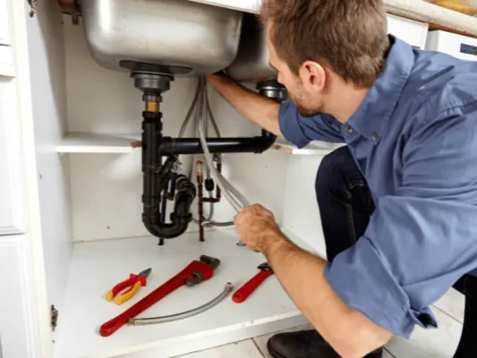
Loodgieters, daar heb je er wat aan. Tenminste, als je de pech hebt dat er iets mis is met je leidingen, je afvoer, je dakgoten of je sanitair. Dan komt…
Vind je het lastig om zelf een baan te vinden? Of wel fijn om een tussenpersoon te hebben waar je altijd bij terecht kunt? Dan kan een uitzendbureau…
Weet je nog hoe jij je voelde toen je jouw rijbewijs haalde? Of moet je er nog voor gaan? En welk rijbewijs gaat het dan worden? Want er zijn er veel. We…

Fotografen zijn verhalenvertellers , die jouw meest dierbare momenten kunnen vastleggen, waardoor ze nooit meer vergeten zullen worden. Er zijn veel…
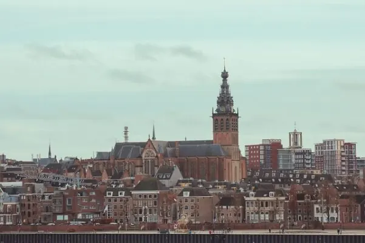
Nijmegen is één van de meest aantrekkelijke plaatsen om te wonen. Wij begrijpen dat wel. De stad is immers een lust voor het oog, en ook betreft het een…
Nijmegen is een bruisende stad, en er zijn dan ook veel mensen die graag in deze prachtige plaats zouden willen wonen. Langdurig huren in Nijmegen is…

Je wilt op kamers gaan in Nijmegen , maar je weet niet waar je moet beginnen. De één zoekt al maanden, terwijl de ander het zo voorgeschoteld krijgt. Het…
Wanneer je vanuit het buitenland in Nederland komt wonen voor langere tijd, ben je verplicht om een inburgeringscursus te volgen. Hierbij leer je de…
Taal is van onschatbare waarde in onze samenleving. Zonder taal zouden we ons niet kunnen uitdrukken en geen informatie kunnen overbrengen. Wil jij graag…